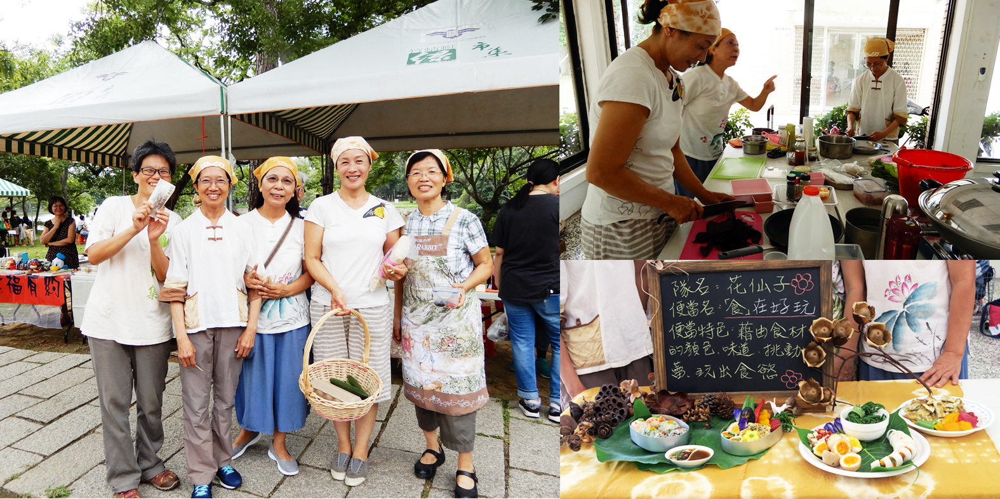
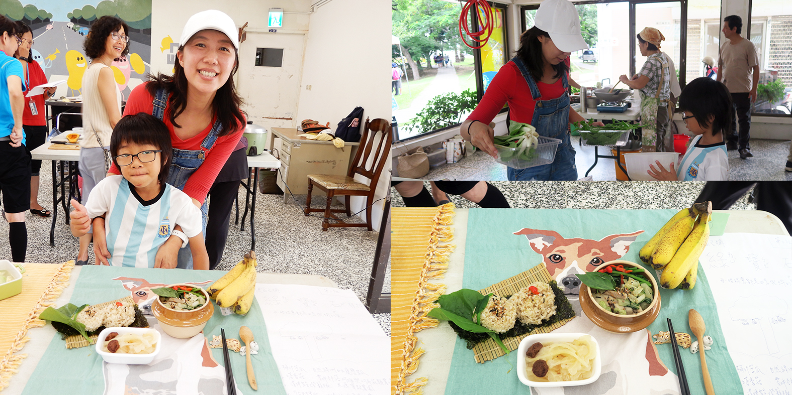

秋日野餐便當全紀錄
撰文：林如貞
竹蜻蜓綠市集位在風景優美的清大成功湖畔，秋天非常適合戶外野餐，9/1和《稻田裡的教室》作者林如貞共同企劃「野餐便當」活動，有興趣的朋友，只要自備2~3樣少少食材，其他食材幾乎綠市集準備好，綠市集還提供每組500元買菜金，在市集逛一圈後，每組發揮野餐創意，票選第一名的那組(最多五人一組)，每人可獲得價值120元的有機棉布巾（可以當桌墊、提包，也可當領巾、頭巾，用途廣呢！）。
 第一名的隊名「花仙子」來自荒野保護護協會「野餐便當」獲得第一名的隊名「花仙子」，來自荒野保護護協會新竹分會─溎勤（自然名：台灣山桂花）、金美（金銀花）、素櫻（櫻花）、嘉莉（玫瑰），充分展現自然與環保。便當名：「食」在好玩，便當特色：藉食材的顏色、味道，玩出食慾，挑動味蕾。
提前一小時到，布置和討論，她們充滿笑容到市集購買，帶著籃子、便當盒裝食材，實踐不用塑膠袋的「裸買」活動。 分熟食、生食區料理，工作井然有序。自備「透抽」，塞入涼拌的胡蘿蔔、小黃瓜，切片，美觀又好吃。
漬蘿蔔，分別以洛神蜜餞汁液和山黃梔子果實染成紫紅色與金黃色，並以菩提葉、荷葉……等自然素材裝飾便當。市集裡兩位曾是高科技工程師走過來交流，找回那些他們當年忙著工作、忽略人生也很重要的部分。
煮好的飯分別拌入三種蔬菜，一、加入切碎並調味的紫蘇葉，二、加入汆燙並切丁的胡蘿蔔，三、加入汆燙並切碎的奶油白菜。三者均以細切的蘋果醋果渣為內餡，增加迷人的酸甜味道。最後捏成圓形飯糰，由於有充分攪拌均勻，飯糰吃起來，飯、菜不會散開來，滋味融合，還可以感受到媽媽們手感的溫度和勁道。
【使用食材】榮啟的紅蘿蔔25元、秋葵10元、紫蘇5元、青菜35元
櫻翔、東風的雞蛋75元
媽媽米雅的米70元
石磊的小黃瓜32元
豆之味的豆干40元
自備食材野薑花：來自荒野保護協會的油羅田。在市集買更多的好菜和水果，回家與家人分享。
素卿、美卿、錦芳、美鳳，美鳳看到活動訊息覺得很好玩，自己馬上報名，之後才去找其他組員加入，隊長素卿曾在「卿媽咪」FB上分享在家煮飯相簿一年。她說：「有同事告訴我，她在福利社買菜時買了『過貓』這個食材，是因為我前一天有介紹『過貓』食譜。」素卿媽媽在家煮飯的動力一來是改善小孩過敏，二來是她從小就愛跟著媽媽在廚房，煮食像是樂趣和紓壓，透過這些料理去細細咀嚼媽媽的用心和味道，如今把這些傳承給家裡的小孩，並分享給有興趣的同事和朋友。
【使用食材】雞蛋60元、地瓜葉、秋葵、龍鬚菜70元、絲瓜70元、小黃瓜38元、胡蘿蔔、苦瓜15元、香蕉20元、米90元自備食材：紅龍果*2。
第一次來到綠市集的美鳳參賽心得：「組隊報名時，有人問我哪來的勇氣。而且只有三個組，哪報得上？說真的，一下子就秒殺截止囉！早上出門前，跟家人說要去參加一場保證前三名的比賽，重點不在名次，好玩就好。我們這組因為有大廚卿媽咪在，雖然較慢開始，看她熟練地將一樣樣，剛才在外面攤位買來的食材料理成美味佳餚，只能說：『親愛的卿媽咪，妳實在太厲害了！』另，在預算有限下，竟還有餘額買了檸檬八個、橄欖四個、黃金果兩個，犒賞辛苦的團員。」
 第三隊「綠寶石～每一眼綠意都是四季與生命的寶石」來自北埔，本來是一家四口報名，臨時爸爸和大兒子有事，由媽媽若沂、國小二年級兒子卓示來挑戰，兒子五歲就開始學煮菜，媽媽說：「因為兒子喜歡吃苦瓜，家裡常用苦瓜蒸魚，所以這次也準備苦瓜。」即使比賽人手和時間不如其他隊伍來的多，媽媽沒有攬下來自己做，仍是耐心地教導年幼的兒子參與，讓他買菜、切菜、畫宣傳海報，在有限的時間、環境下，共同完成母子情感豐富的野餐便當。
目前教育多在書本、影片或網路學習，孩子們很需要真實的生活感受。媽媽若沂分享有一次兒子放學回來，與邊洗餐碗邊煮晚餐的媽媽閒聊。「媽媽，今天老師上課有提到『黏膩膩』的感覺，很多同學不知道那是什麼感覺，我說，就是在廚房洗碗煮菜時，手上有時會黏黏的那種感覺啊！」媽媽心頭一震，原本還在過度擔心孩子作文遣詞用字不夠精確優美之餘，孩子點醒了我，要有自身體驗，他才能理解那華麗辭藻如何具象地、自然地被呈現。媽媽若沂活動心得「做一個記憶的便當，在市集，在湖畔。」
【使用食材】梅汁苦瓜：自然綠洲白玉履歷苦瓜 塔香菇：雲屏部落阿雄與阿布菇類農場 清拌皇宮燈籠椒：水源榮啟農園 7分糙米飯：北埔鄉嬤嬤米雅農園 糙米：100元、苦瓜80元、香菇100元、皇宮葉和荷葉白菜65元、燈籠椒和九層塔35元、香蕉58元
市集攤商的評分時刻與熱情相挺市集攤商夥伴30幾人先以外觀、創意、團隊互動、未來推廣能力為各組第一階段評分，接著試吃作第二階段評分。市集攤商夥伴對於自己的食材被如此用心呈現，心裡也很感動，紛紛詢問比賽選手這些菜是如何調味、怎麼煮出來。
我和小選手卓示分享市集購買的新鮮紅棗，小手拿個幾顆紅棗的他說：「我已經拿得夠多，可以給其他人。」真是有愛心的好孩子。
非常感謝竹蜻蜓綠市集夥伴朋友不嫌麻煩、熱心提供電鍋、廚具……等，以及借到清大一間可以同時煮三台電鍋、不會跳電的教室。 目前政府鼓勵民眾多運動，各地有運動公園、健身器材、步道……等相關配套設施。健康飲食和運動一樣，需要動手練習讓身體記憶養成好習慣、以及找到同好一起做，因此，衷心希望政府或機構能在各地多多成立至少有三個料理台、電鍋的烹飪教室。
「秋日野餐便當」之外， 當天市集有「好一個瓜啊+ 認識蔬菜」、「網袋編織」、「市集日，畫畫日」粉彩筆創作，還有爬樹活動，足以攜家帶眷兵分好幾路，花最小的費用，得到最大的滿足~買健康好吃的食材、動手做、自由走動分享心得，知性兼感性，玩得很開心，結交不同領域的新朋友。歡迎常常來竹蜻蜓綠市集！活動詳竹蜻蜓綠市集FB。
後記 【野餐規則】- 每組4~5人，共3組，製作野餐便當，由市集攤商評分，最高分組致贈每人一條有機棉布巾。
- 綠市集提供500元買菜基金，活動當天到竹蜻蜓綠市集購買米、食材，另外，每組可自備其他2~3種食材，製作野餐便當。
- 綠市集提供現場每組電鍋(含內鍋及量米杯)、刀具、砧板、洗菜準備鍋*3，並備有油、鹽、醋、糖三組共用
- 每組寫下便當名稱和特點，及材料、購買金額、農夫或農場名稱。
- 每組自備野餐墊、便當盒，11：30前完成料理和佈置，通知市集攤商前往試吃評分。
- 參加者請同意肖像權、活動照片、食譜分享在竹蜻蜓綠市集FB和刊物。
- 等待飯煮好的時間可就近聽彭桂枝老師分享綠繪本、林如貞分享米故事。

野餐墊：綠市集方巾，剪成心型的香蕉葉、白花紫蘇、圓仔花
- 糙米+台灣油芒飯，一點壽司海苔
- 苦瓜+樸食小舖破布子+絞肉+社頭朋友送的自家栽種沒炒過米糠+黑木耳+土雞蛋+胡蘿蔔3.小黃瓜+阿金姐紫蘇梅+唐婆糙米醋4.芭蕉